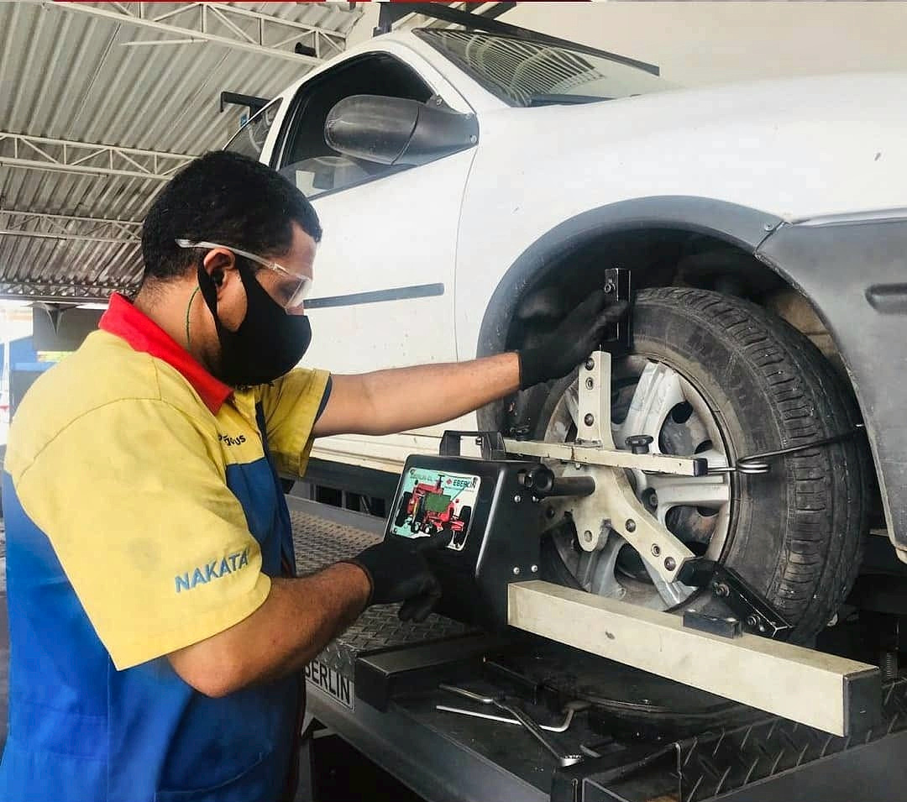
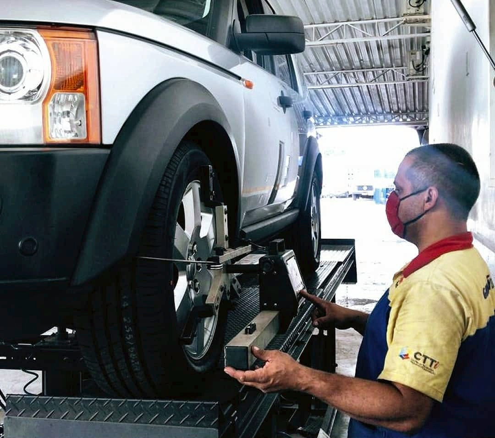
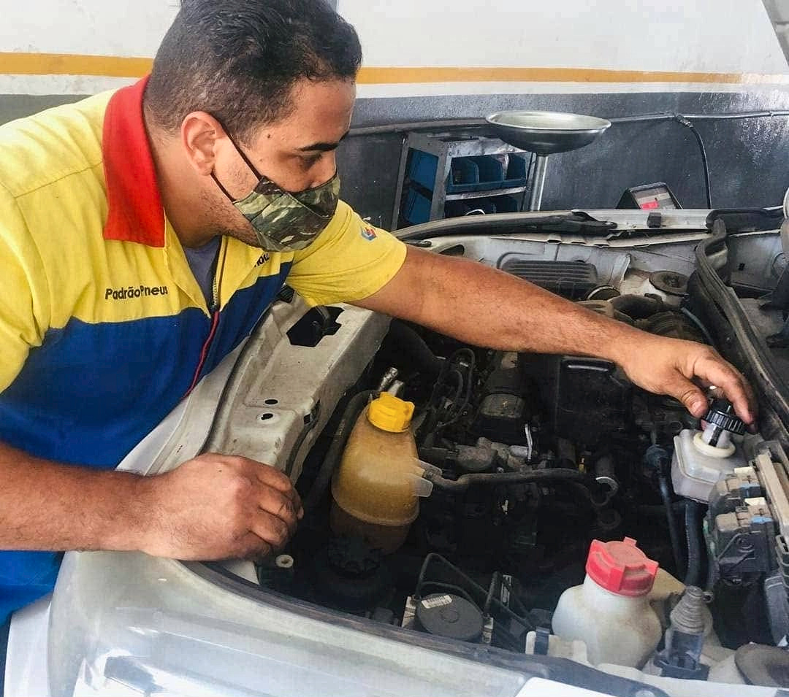
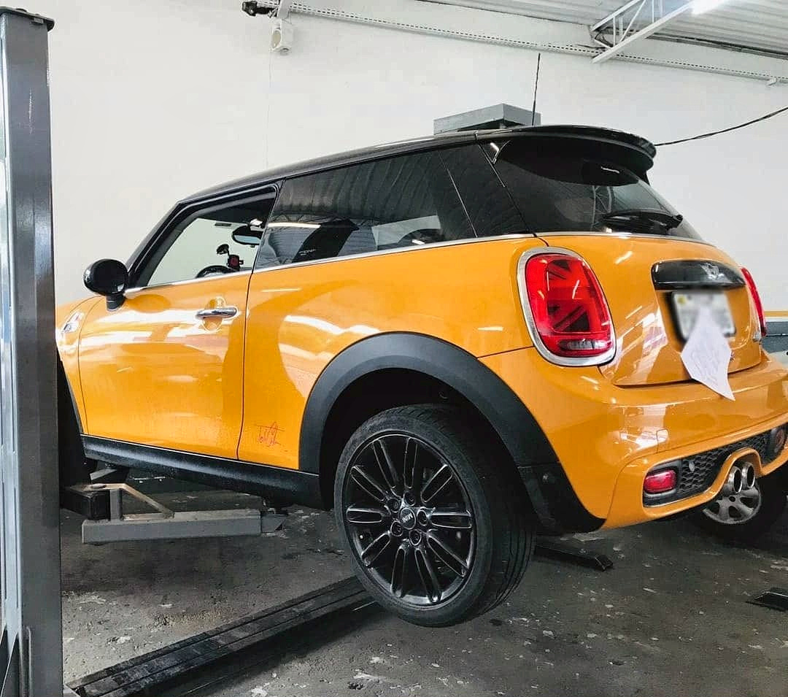
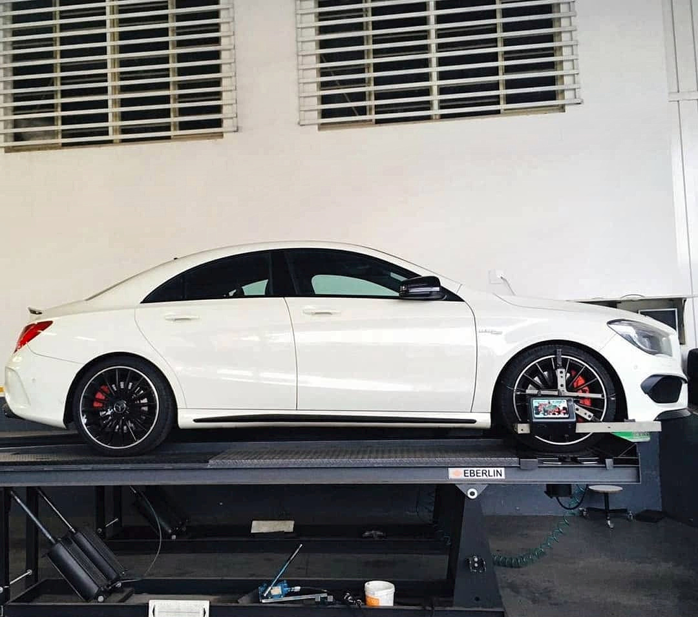
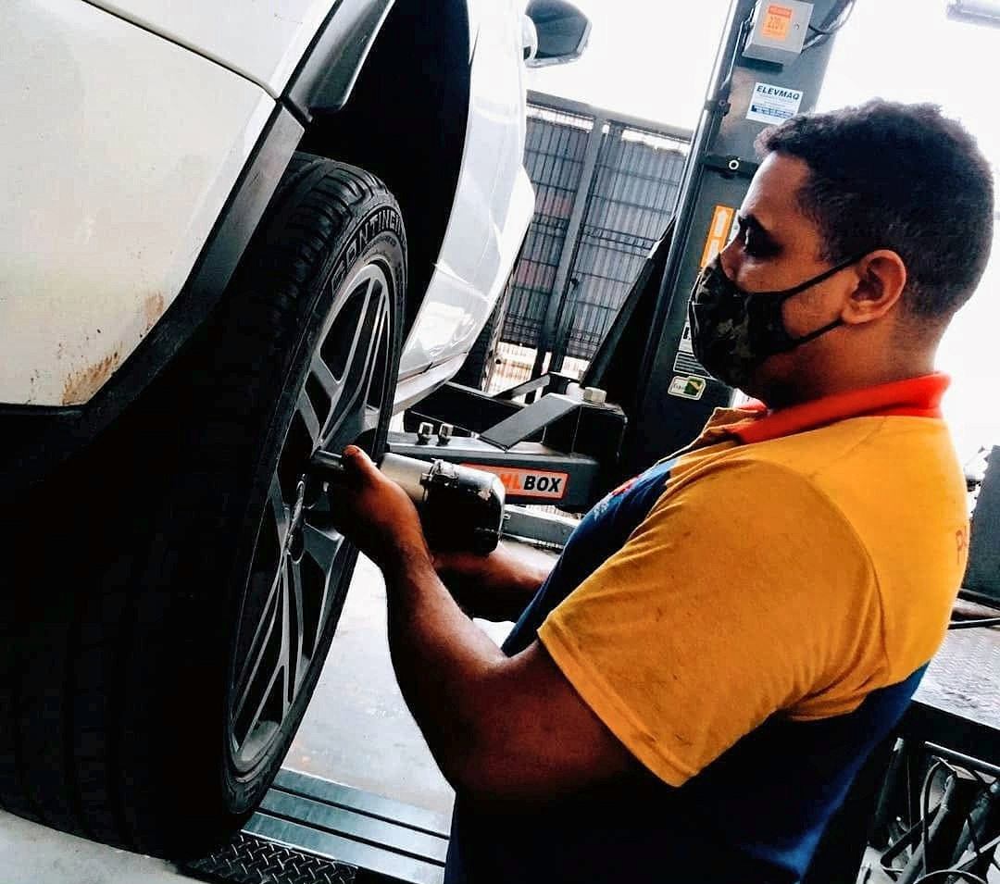
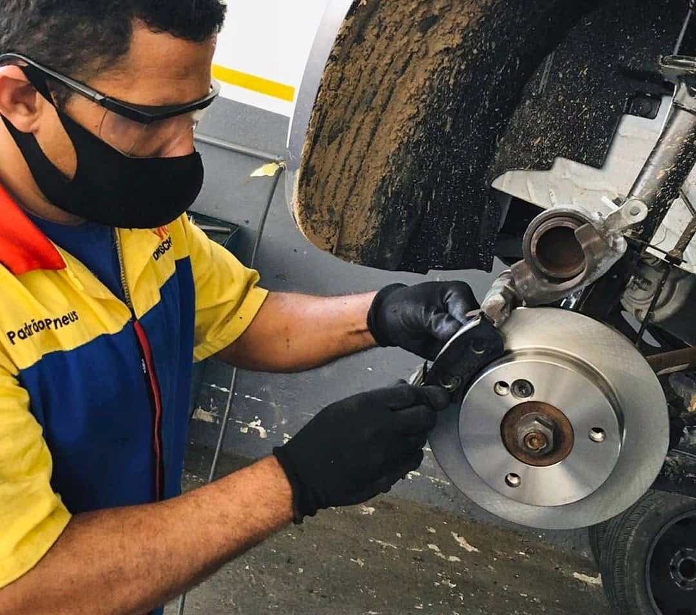
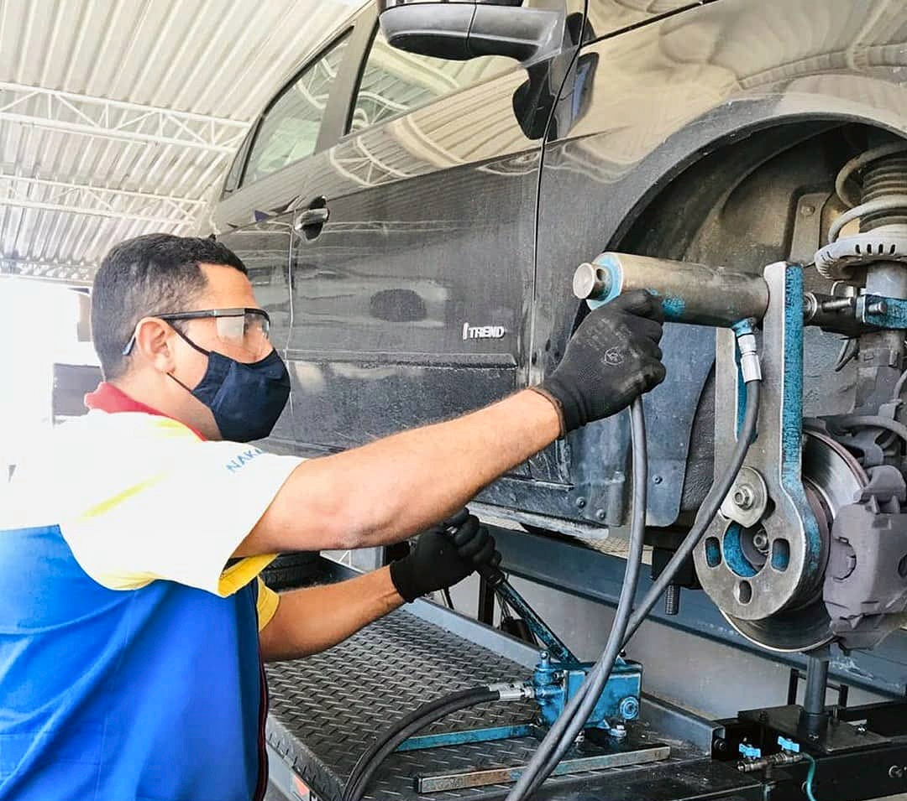

Pneus
Encontre a opção adequada para seu veículo e sua rotina. Consulte medidas e disponibilidade.
Pedir cotaçãoEm Valinhos, um atendimento próximo para cuidar dos pneus, alinhamento e balanceamento do seu carro. Informação clara para você seguir com confiança.
Serviços essenciais para seguir com segurança, estabilidade e tranquilidade. Converse com nossa equipe para verificar sua necessidade.
Encontre a opção adequada para seu veículo e sua rotina. Consulte medidas e disponibilidade.
Pedir cotaçãoCuidados com a geometria das rodas para uma direção estável e um desgaste mais uniforme.
Consultar serviçoVerificação e correção de desequilíbrios das rodas, conforme avaliação técnica.
Consultar serviçoO trabalho acontece nos detalhes: na atenção à roda, na verificação do veículo e no cuidado durante cada etapa. Veja registros reais da nossa oficina em Valinhos.








Precisa de pneus, alinhamento ou quer explicar o que está acontecendo com seu veículo? Conte para a nossa equipe.
Registros de serviços realizados. Imagens para demonstração; uso público sujeito à confirmação das autorizações de imagem e dos serviços atualmente oferecidos.
A Padrão Pneus faz parte da rotina de quem circula por Valinhos. Aqui vamos mostrar a fachada, a estrutura e a equipe com fotos reais, do jeito que o cliente encontra ao chegar.
Veja como chegarVeja serviços, informações e localização em uma única página.
Informe as medidas do pneu ou descreva o serviço que procura.
Leve sua necessidade diretamente para a equipe da Padrão Pneus.
Selecione o serviço, informe seu veículo e gere uma mensagem pronta. Você prepara sua solicitação e pode enviá-la diretamente ao WhatsApp comercial da Padrão Pneus.
Horários informados no Google em 27/10/2026; sujeitos a confirmação com a loja. Consulte em feriados.
Prévia em desenvolvimento: informações e nome exibido no Maps serão revisados com o proprietário.